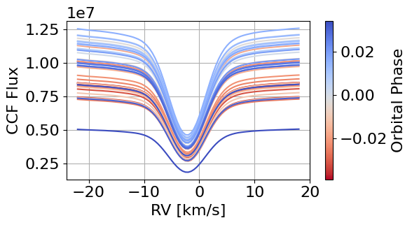
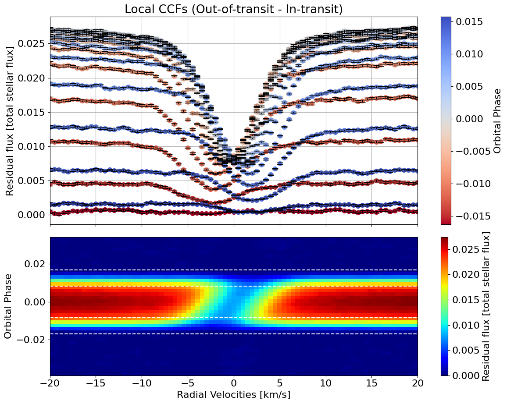
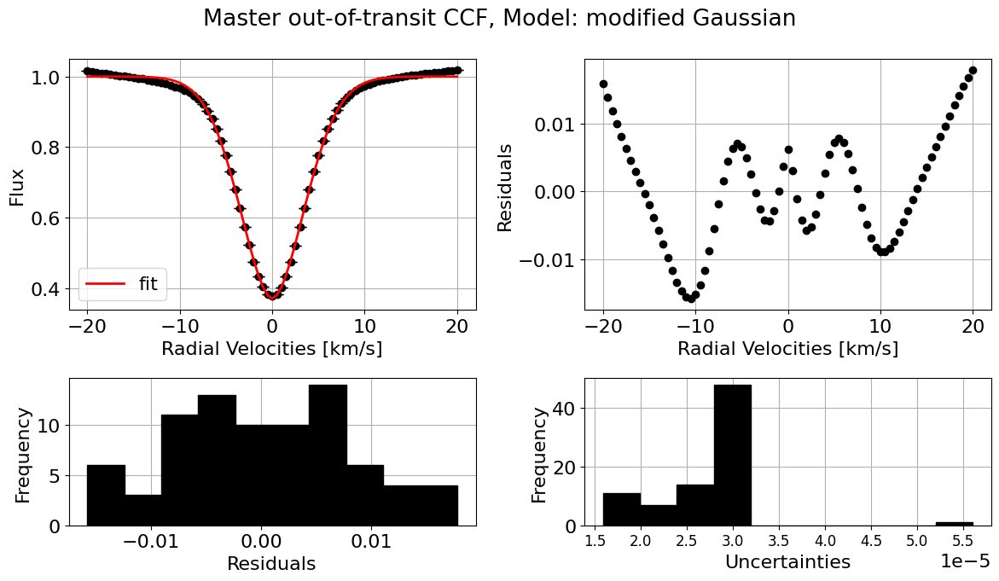
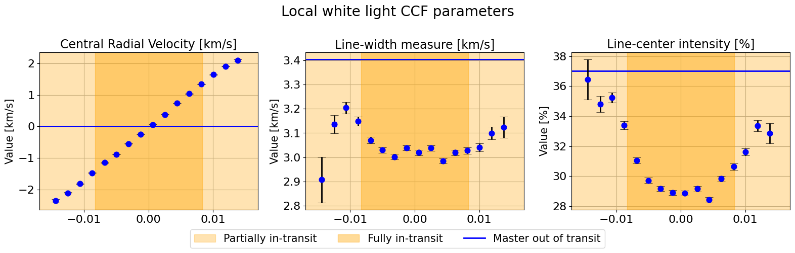
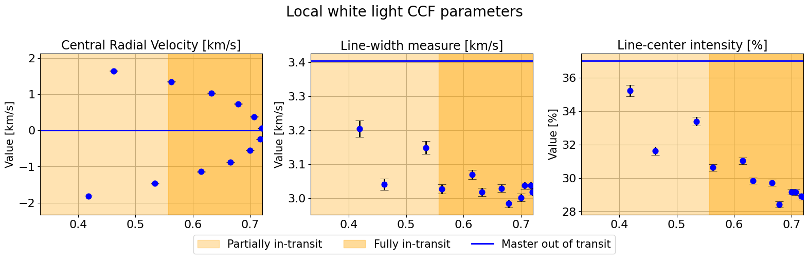
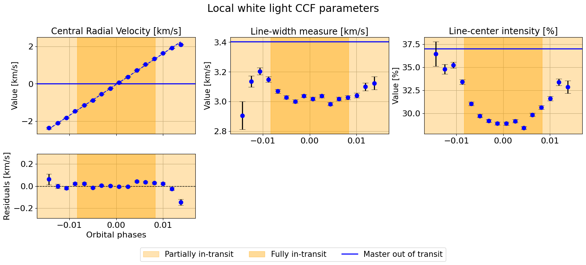
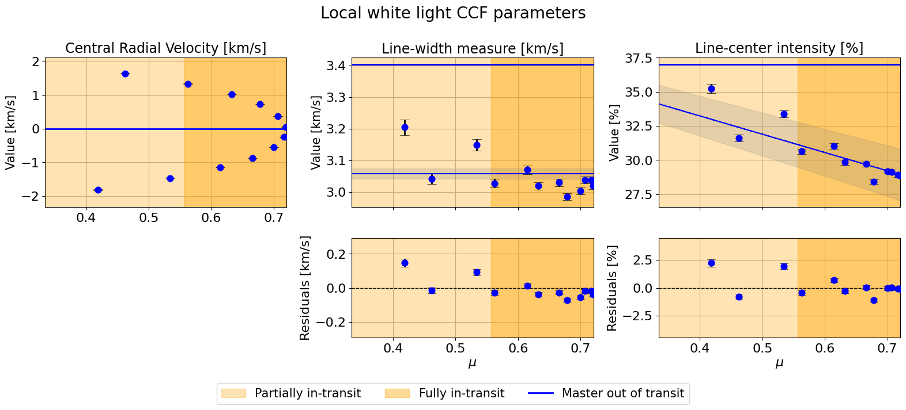

[1]:
import numpy as np
from HECATE.HECATE import HECATE
from HECATE.get_data import *
from HECATE.plots import *
[2]:
stellar_params = {
"Teff":4969, "Teff_err":43, #effective temperature [K]
"logg":4.60, "logg_err":0.01, #superficial gravity [dex]
"FeH":-0.07, "FeH_err":0.02, #metallicity [dex]
"P_rot":2.21857312, #rotation period [d]
"R_star":0.766, #radius [solar radii]
"inc_star":71.87 #stellar inclination [º]
}
planet_params = {
"P_orb":2.21857312, #orbital period [d]
"a_R":8.76863, #system scale [stellar radii]
"Rp_Rs":0.1602, #planet-to-star radius ratio
"t0":53988.30339, #mid-transit time [d]
"e":0, #orbital eccentricity
"w":90, #argument of periastron [º]
"inc_planet":85.465, #planet inclination [º]
"lbda":-1.00, #spin-orbit angle [º]
"dfp": -0.002424 #mid-transit phase shift
}
White light CCF
[3]:
CCFs, time, airmass, berv, bervmax, snr, list_ccfs = get_CCFs(planet_params,
day='2021-08-11',
directory_path="HD189733_ESPRESSO_white_light_ccfs")

[4]:
plot_air_snr(planet_params, time, airmass, snr)
[5]:
hecate = HECATE(planet_params, stellar_params, time, CCFs, None)
Need to download 11 files, approximately 3.67 MB
[6]:
plot = {"SOAP":False, "fits_initial_CCF":False,
"sys_vel_ccf":False, "avg_out_of_transit_CCF":False,
"local_CCFs":True, "photometrical_rescale":False}
ccf_type = "white light"
model_fit = "modified Gaussian"
[7]:
local_CCFs, CCFs_flux_corr, CCFs_sub_all, avg_out_of_transit_CCF = hecate.extract_local_CCF(model_fit, plot, save=None)

[8]:
master_results = hecate.get_profile_parameters(profiles=avg_out_of_transit_CCF,
data_type="CCF",
observation_type="master",
model="modified Gaussian",
print_output=True,
plot_fit=True)
##################################################
Fitting modified Gaussian model to master CCF profile
--------------------------------------------------
Fit parameters:
y0 = 0.999704 ± 0.000005
x0 = -0.000353 ± 0.000049
sigma = 3.404545 ± 0.000090
a = 0.629535 ± 0.000011
c = 1.823704 ± 0.000085
R^2: 0.9983
--------------------------------------------------
Profile parameters:
Central RV [km/s]: -0.000353 ± 0.000049
Continuum: 0.999704 ± 0.000005
Line-center intensity [%]: 37.027842 ± 0.001099
Line-width measure [km/s]: 3.404545 ± 0.000090

[9]:
local_results = hecate.get_profile_parameters(profiles=local_CCFs,
data_type="CCF",
observation_type="local",
model="modified Gaussian",
print_output=False,
plot_fit=False)
[10]:
indices_final = np.where(local_results['R2'] >= 0.95)[0]
local_params = [local_results['central_rv'], local_results['width'], local_results['intensity']]
master_params = [master_results['central_rv'], master_results['width'], master_results['intensity']]
hecate.plot_local_params(indices_final, local_params, master_params, suptitle=r"Local white light CCF parameters")


[11]:
hecate.plot_local_params(indices_final, local_params, master_params,
suptitle=r"Local white light CCF parameters",
linear_fit_pairs=[("phases", 0), ("mu", 1), ("mu", 2)])
==================================================
Central Radial Velocity [km/s]
----------------------------------------
Orbital phases
19344it [00:28, 672.21it/s, batch: 7 | bound: 4 | nc: 1 | ncall: 399927 | eff(%): 4.707 | loglstar: 43.483 < 48.709 < 48.265 | logz: 32.162 +/- 0.110 | stop: 0.897]
14590it [00:18, 780.34it/s, batch: 7 | bound: 4 | nc: 1 | ncall: 278723 | eff(%): 5.045 | loglstar: -20.076 < -14.326 < -15.176 | logz: -21.339 +/- 0.066 | stop: 0.910]
------------------------------
Linear vs Constant
logZ(linear) = 32.152 ± 0.099
logZ(constant) = -21.329 ± 0.061
log Bayes factor = 53.481
Unconstrained model favored.
------------------------------
18227it [00:26, 679.82it/s, batch: 6 | bound: 3 | nc: 1 | ncall: 374386 | eff(%): 4.730 | loglstar: 43.619 < 48.696 < 47.817 | logz: 32.778 +/- 0.109 | stop: 0.954]
17223it [00:22, 749.03it/s, batch: 6 | bound: 6 | nc: 1 | ncall: 349479 | eff(%): 4.778 | loglstar: -20.341 < -12.875 < -14.605 | logz: -24.389 +/- 0.091 | stop: 0.802]
Positive vs Negative slope
===========================
logZ(m>0) = 32.766 ± 0.101
logZ(m<0) = -24.399 ± 0.081
log Bayes factor = -57.165
Positive slope favored.
==========================
Linear fit parameters:
m = 165.337813 +/- 1.344358
b = -0.037528 +/- 0.004504
ln_f = -3.534726 +/- 0.228630
------------------------------
==================================================
Line-width measure [km/s]
----------------------------------------
$\mu$
19504it [00:28, 673.11it/s, batch: 6 | bound: 3 | nc: 1 | ncall: 402918 | eff(%): 4.712 | loglstar: 32.369 < 37.416 < 36.364 | logz: 18.735 +/- 0.119 | stop: 0.956]
17450it [00:24, 722.57it/s, batch: 8 | bound: 4 | nc: 1 | ncall: 341361 | eff(%): 4.959 | loglstar: 27.512 < 32.493 < 32.218 | logz: 21.539 +/- 0.081 | stop: 0.869]
------------------------------
Linear vs Constant
logZ(linear) = 18.714 ± 0.111
logZ(constant) = 21.545 ± 0.076
log Bayes factor = -2.831
Zero-slope model favored
========================
Linear fit parameters:
b = 3.057632 +/- 0.016757
ln_f = -3.941028 +/- 0.228244
------------------------------
==================================================
Line-center intensity [%]
----------------------------------------
$\mu$
17321it [00:25, 692.49it/s, batch: 7 | bound: 4 | nc: 1 | ncall: 353758 | eff(%): 4.749 | loglstar: -11.793 < -6.131 < -6.729 | logz: -18.134 +/- 0.091 | stop: 0.878]
15692it [00:20, 748.70it/s, batch: 8 | bound: 3 | nc: 1 | ncall: 302696 | eff(%): 5.010 | loglstar: -23.241 < -18.170 < -18.615 | logz: -25.701 +/- 0.066 | stop: 0.865]
------------------------------
Linear vs Constant
logZ(linear) = -18.132 ± 0.083
logZ(constant) = -25.721 ± 0.063
log Bayes factor = 7.589
Unconstrained model favored.
------------------------------
17885it [00:23, 762.09it/s, batch: 7 | bound: 5 | nc: 1 | ncall: 365662 | eff(%): 4.748 | loglstar: -24.544 < -18.206 < -19.093 | logz: -30.224 +/- 0.091 | stop: 0.811]
16913it [00:24, 702.56it/s, batch: 7 | bound: 4 | nc: 1 | ncall: 342953 | eff(%): 4.778 | loglstar: -11.759 < -6.124 < -6.752 | logz: -17.517 +/- 0.089 | stop: 0.876]
Positive vs Negative slope
===========================
logZ(m>0) = -30.242 ± 0.083
logZ(m<0) = -17.529 ± 0.082
log Bayes factor = 12.713
Negative slope favored.
==========================
Linear fit parameters:
m = -13.397920 +/- 2.013195
b = 38.596425 +/- 1.216332
ln_f = -3.435952 +/- 0.226141
------------------------------

